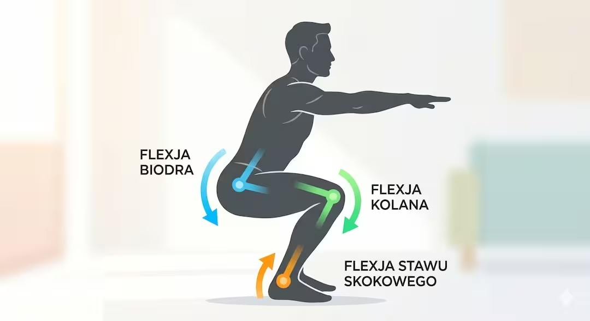
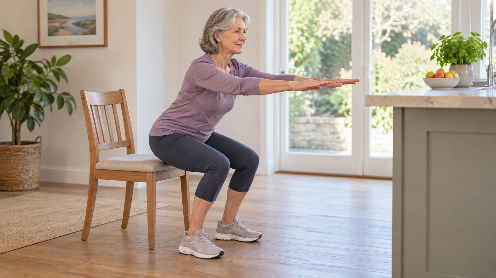

Szybka odpowiedź
Głęboki przysiad nie jest uniwersalnym testem zdrowia ani obowiązkiem po 50-tce. Pokazuje jednocześnie ruchomość stawu skokowego i biodra, proporcje ciała, równowagę oraz znajomość ruchu. Przegląd z 2024 roku nie wykazał, aby prawidłowo wykonywany głęboki przysiad sam niszczył zdrowe kolana, ale ból, świeży uraz i ograniczenia pooperacyjne wymagają indywidualnej oceny.
Kluczowe wnioski
- Brak pełnej głębokości nie oznacza automatycznie choroby ani „złego starzenia”.
- Uniesienie pięt na klinie pomaga odróżnić ograniczenie kostki od innych elementów ruchu.
- Głębokość dobiera się do kontroli i objawów; nie wymusza się jej ciężarem ani odbijaniem.
- Ból, blokowanie, niestabilność albo świeży obrzęk są ważniejsze niż wynik internetowego testu.
Co naprawdę sprawdza głęboki przysiad?
Ruch łączy zgięcie bioder i kolan, zgięcie grzbietowe stawu skokowego, stabilność stóp, równowagę i kontrolę tułowia. Wynik zależy również od długości kości udowej i tułowia oraz wcześniejszej praktyki. Dlatego nie wolno wyciągać diagnozy z jednego zdjęcia ani porównywać dwóch osób o innej budowie.
Ogólną pracę nad zakresem ruchu porządkuje program mobilności po 50-tce.

Czy głęboki przysiad jest bezpieczny dla kolan?
Przegląd zakresowy obejmujący 15 prac wskazał brak negatywnego wpływu prawidłowo wykonywanych głębokich przysiadów na zdrowie stawu u osób trenujących. Nie oznacza to bezpieczeństwa dla każdej kontuzji i każdego obciążenia. Technika, tempo, progresja, historia urazów i aktualne objawy zmieniają ryzyko.
Jeżeli kolano boli także podczas chodzenia lub puchnie, zacznij od diagnostyki; kontekst obciążeń daje analiza biegania i kolan.
Jak sprawdzić, co ogranicza głębokość?
Wykonaj spokojny przysiad przy stabilnym podparciu. Następnie powtórz go z niewielkim klinem pod piętami. Wyraźna poprawa sugeruje udział ruchomości kostki, ale nie stanowi diagnozy. Jeśli pięty zostają na ziemi, a tułów traci kontrolę, sprawdź szerokość ustawienia i zmniejsz głębokość.
Nie wciskaj kolan ani bioder w ból. Zakres powinien być kontrolowany i powtarzalny.
Jak progresować bez wymuszania pozycji?
Zacznij od przysiadu do krzesła, następnie użyj stabilnego podparcia i stopniowo obniżaj cel. Wykonuj dwa lub trzy krótkie treningi tygodniowo, zwiększając najpierw kontrolę i liczbę powtórzeń, a dopiero później obciążenie. Jeśli objawy utrzymują się lub rosną następnego dnia, cofnij ostatnią zmianę.

Pełny plan bazowy znajdziesz w poradniku startu na siłowni i Centrum Treningu Siłowego.
| Wariant | Cel | Kiedy przejść dalej? |
|---|---|---|
| Krzesło | Kontrola siadania i wstawania | Powtórzenia bez zapadania |
| Podparcie | Większy zakres z równowagą | Brak wymuszanego bólu |
| Klin pod pięty | Ułatwienie przy ograniczeniu kostki | Stabilny tułów i stopy |
| Bez podparcia | Samodzielna kontrola | Powtarzalna technika |
Dobry przysiad to najgłębszy zakres, który potrafisz kontrolować bez wymuszania bólu - nie pozycja skopiowana z internetu.
Najczęściej zadawane pytania
Czy głęboki przysiad niszczy kolana?
Dostępny przegląd nie potwierdza takiej reguły przy prawidłowej technice, ale uraz i objawy wymagają indywidualnego podejścia.
Dlaczego odrywają mi się pięty?
Częstą przyczyną jest ograniczone zgięcie grzbietowe kostki, lecz wpływają też proporcje ciała, ustawienie i kontrola.
Czy kolana mogą wychodzić przed palce?
Takie ustawienie nie jest automatycznie błędem. Liczą się kontrola, obciążenie, budowa i tolerancja stawu.
Czy trzeba umieć siedzieć w przysiadzie?
Nie. To przydatna umiejętność ruchowa, ale nie obowiązkowy warunek zdrowia ani sprawności.
Źródła
- Deep squat and knee health - scoping review
- Squat depth and joint loading - review
- Squat kinematics and kinetics - review
- Ankle mobility and squat mechanics
Uwaga: Artykuł ma charakter informacyjny i edukacyjny. Nie zastępuje konsultacji, diagnozy ani indywidualnego leczenia.